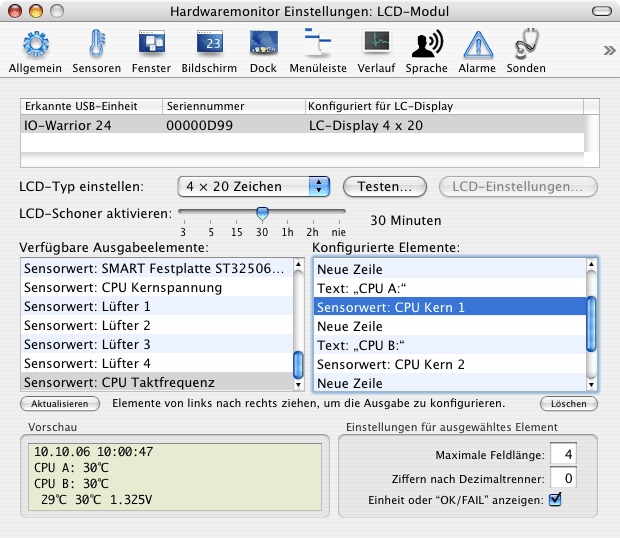

Steuerung externer alphanumerischer Anzeigen |
In einigen Situationen reicht es möglicherweise nicht aus, Ihr System über einen angeschlossenen Monitor oder aus der Ferne über das Netzwerk zu überwachen. Es kann sinnvoll sein, Überwachungsmöglichkeiten direkt am Computergehäuse zu haben, besonders wenn das System gar nicht mit einem Monitor ausgerüstet ist. Server, die in einer "headless" Konfiguration laufen, z.B. Xserve-Einheiten, die üblicherweise noch nicht einmal mit einer Grafikkarte ausgestattet sind, sind ein gutes Beispiel.
Für diese Art der Konfiguration kann Hardwaremonitor Ablesewerte auch auf eine externe alphanumerische Flüssigkristallanzeige (LCD) senden, die über eine USB-Schnittstelle an den Computer angeschlossen ist. Ein Beispiel ist im folgenden Foto zu sehen:
Ergänzend zu gesammelten Messwerten von Sensoren und Sonden erlaubt Ihnen Hardwaremonitor auch, weitere Daten für die Ausgabe vorzusehen, z.B. die aktuelle Uhrzeit oder die IP-Adresse eines bestimmten Netzwerkanschlusses. Das Beispiel oben zeigt Datum und Uhrzeit, vier Temperaturwerte, eine Balkenanzeige für Prozessorlast, drei S.M.A.R.T.-Statuswerte, einen RAID-Betriebszustand und eine ausgewählte IP-Adresse. Der Inhalt des Displays wird in der gleichen Häufigkeit aktualisiert wie alle anderen Ausgabekanäle von Hardwaremonitor. Die erwähnten Funktionen stehen in Temperaturmonitor nicht zur Verfügung.
Hardwaremonitor unterstützt ausschließlich die folgende Hardware-Ausrüstung:
Bei den Crystalfontz-Anzeigen handelt es sich in Wirklichkeit um serielle (RS-232) Module, die mit einem eingebauten USB-zu-seriell-Konverter geliefert werden. Sie benötigen einen zusätzlichen Gerätetreiber für Ihre Version von Mac OS X, um es dem Betriebssystem zu ermöglichen, sich mit diesem Konverter zu verbinden. Der Konverter wird von Future Technology Devices International Limited (FTDI) hergestellt. Kostenlose Treiber von FTDI sind auf dieser Webseite erhältlich: http://www.ftdichip.com/Drivers/VCP.htm. Für die IO-Warrior-Lösung wird keine zusätzliche Software benötigt.
Wir können keinerlei Fragen über diese
Hardwarekomponenten oder deren Vertrieb beantworten. Diese Produkte
werden von uns weder beworben, noch verkauft. Falls Sie Ihr eigenes LCD-Modul
bauen oder zusammenstellen möchten, wenden
Sie sich zu Fragen bitte an die folgenden Webseiten bezüglich
Dokumentation oder Kontaktinformationen:
http://www.codemercs.com/
http://www.crystalfontz.com/
http://www.logitech.com/
Informationen über Produkte, die nicht von uns hergestellt werden, oder über
die Webauftritte von Drittanbietern werden von uns ausschließlich zu Referenzzwecken
genannt und stellen weder eine Empfehlung noch eine Zustimmung dar. Bitte wenden
Sie sich an die jeweiligen Anbieter, um weitere Informationen zu erhalten. Wir
stellen unseren Kunden diese Daten nur zur Arbeitserleichterung zur Verfügung.
Die Informationen der Drittanbieter sind von uns weder überprüft, noch machen
wir jegliche Äußerungen bezüglich deren Genauigkeit oder Zuverlässigkeit. Die
Verwendung von Informationen oder Produkten aus dem Internet birgt Risiken, für
die wir keine Verantwortung übernehmen können. Wir weisen darauf hin, dass Webauftritte
von Drittanbietern nicht mit uns in Zusammenhang stehen und wir keinen Einfluss
auf deren Inhalte haben.
Um ein Crystalfontz-USB-Modul nutzen zu können, müssen Sie vorher die folgenden Schritte durchführen:
WARNUNG: Wir haben keinen Einfluss auf die Qualität der Treiber von Drittanbietern. Der FTDI-Treiber kann unter bestimmten Umständen Kernel-Panics in Mac OS X auslösen, insbesondere bei Systemen mit mehr als 2 GByte Hauptspeicher. Eine Kernel-Panic ist ein Absturz des Betriebssystems, was Datenverlust verursachen kann. Falls Sie Probleme mit dem Treiber haben, stellen Sie bitte sicher, dass Sie die neueste erhältliche Version einsetzen, oder wenden Sie sich an den Hersteller, um weitere Unterstützung zu erhalten.
WARNUNG: Weder der FTDI-USB-Konverter, noch das Crystalfontz-Modul stellen Mac OS X eine gültige Seriennummer für die LCD-Einheit zur Verfügung. Aus diesem Grund können weder Mac OS X noch Hardwaremonitor das Modul korrekt nachverfolgen, wenn Sie es vom System abhängen und später wieder anstecken. Mac OS X kann unter Umständen ein wieder angeschlossenes Modul fälschlicherweise als neues Gerät identifizieren, dass danach wieder eingerichtet werden muss. Das heißt, dass alle Einstellungen für die LCD-Anzeige in Systemeinstellungen und in Hardwaremonitor noch einmal gemacht werden müssen.
Logitech erlaubt nicht, dass Hardwaremonitor die LCD-Anzeige auf deren Produkten direkt anspricht. Dies ist notwendig, da das Display von mehreren Programmen unterschiedlicher Anbieter gleichzeitig verwendet werden kann, so dass der Zugriff auf die Anzeige koordiniert werden muss. Die Software Logitech LCD Manager Version 3 muss installiert werden, bevor Hardwaremonitor Displays von Logitech-Produkten erkennen und steuern kann. Diese Software wird entweder mit dem Produkt geliefert oder kann von den Webseiten von Logitech kostenlos heruntergeladen werden. Bitte ziehen Sie für weitere Informationen die Dokumentation hinzu, die mit dem Produkt geliefert wurde.
Hardwaremonitor unterstützt Logitech LCD-Produkte sowohl mit monochromen als auch farbigen Anzeigen. Falls mehrere Geräte zur gleichen Zeit angeschlossen sind, zeigt Hardwaremonitor auf allen Logitech-Displays die gleichen Inhalte an. Sie können die Einstellungskarte LCD Manager in den Systemeinstellungen verweden, um bestimmte Displays von der Nutzung durch Hardwaremonitor auszuschließen. Bei der Nutzung eines Farb-Displays, verwendet die Ausgabe von Hardwaremonitor ausschließlich die Farbe weiß. Nur das Display selbst wird unterstützt, eventuell vorhandene Zusatzknöpfe, die auf gewissen Geräten vorhanden sein können, werden ignoriert.
Logitech unterstützt es nicht, dass Programme unterschiedliche LCD-Produkte einzeln nachverfolgen können. Aus diesem Grund zeigt Hardwaremonitor nur einen einzelnen Eintrag mit der Bezeichnung Logitech LCD Manager in seiner Liste von erkannten USB-Geräten an, auch wenn mehrere Logitech LCD-Produkte angeschlossen sind. Die von Hardwaremonitor angezeigte Seriennummer lautet immer 00000000.
Ein Wechsel der Schriftart oder Schriftgröße wird zurzeit nicht unterstützt.
Die Konfiguration einer externen LCD-Einheit ist sehr leicht und kann über simple Verschiebeoperationen mit der Maus vorgenommen werden.
Das LC-Display leuchtet auf, sobald Sie das Typmenü vom Punkt Kein Display auf einen der möglichen Anzeigearten umgeschaltet haben. Die folgenden Testmuster sind verfügbar:
Falls das ausgewählte LCD-Modul in der Lage ist, zusätzliche Einstellungen per Software zu unterstützen, wird der Knopf LCD-Einstellungen aktiv. Nach dessen Betätigung öffnet sich ein Dialogfenster, in dem Betriebswerte wie Helligkeit der Hintergrundbeleuchtung oder Anzeigekontrast eingestellt werden können.
Sie können zusätzlich einen "LCD-Schoner" für jedes angeschlossene LCD-Modul einrichten, der sicherstellt, dass die Anzeige abgeschaltet wird, wenn Ihr Computer für eine bestimmte Zeitdauer nicht benutzt wurde. Wählen Sie das gewünschte Zeitintervall (oder den Wert nie) mit dem Schieberegler bei LCD-Schoner aktivieren aus. Es ist eine praktische Lösung, das gleiche Zeitintervall einzustellen, das Sie für den Bildschirmschoner in Systemeinstellungen definiert haben, aber dies ist nicht notwendigerweise erforderlich.
Die IO-Warrior USB-Steuereinheit benötigt keine Treiber, um von Mac OS X aus benutzbar zu sein. Um dies technisch möglich zu machen, verhält sich die Einheit wie ein Benutzerschnittstellengerät (Human Interface Device, HID), ähnlich wie eine Tastatur oder Maus. Aus diesem Grund interpretiert Mac OS X bestimmte Signale des IO-Warrior als "Benutzeraktivität", was bewirkt, dass Ihr System keinerlei Ruhezustandsfunktionen mehr automatisch einschaltet, wenn die LCD-Anzeige aktiv ist. Falls Sie den automatischen Ruhezustand für den Bildschirm oder Ihren Computer einsetzen möchten, müssen Sie den LCD-Schoner für das IO-Warrior-Gerät einschalten. In diesem Fall wird die Kommunikation mit dem LCD-Modul nach der eingestellten Zeit gestoppt. Nach diesem Zeitpunkt wird Mac OS X den Datenaustausch mit der Anzeige nicht mehr als aktiver Benutzer fehlinterpretieren und das normale Ruhezustandsintervall wird wie erwartet beginnen. Beachten Sie, dass sich das Gesamtzeitintervall für das Einsetzen des Ruhezustands als Summe aus der LCD-Schoner-Zeit und der Ruhezustandszeit, die Sie in der Energiesparkarte von Systemeinstellungen konfiguriert haben, berechnet.

Nachdem der Displaytyp eingestellt worden ist, können Sie die unteren Teile des Fensters dazu verwenden, um auszuwählen, welche Ausgabeelemente an die Anzeige gesendet werden sollen. Die linke Tabelle zeigt Ihnen alle Ausgabeelemente, die auf dem lokalen Computer zur Verfügung stehen. Die rechte Tabelle zeigt Ihnen die aktiven Elemente, die im Moment zum Display gesendet werden. Zu Beginn ist die Tabelle auf der rechten Seite leer. Sie können mit der Maus Elemente von der linken zur rechten Tabelle ziehen und so die gewünschte Ausgabe Schritt für Schritt einstellen.
Die ausgewählten Ausgabeelemente erscheinen mit aktuellen Messwerten sofort auf dem Display, wobei das Zeitintervall zur Aktualisierung verwendet wird, dass Sie im Bereich Allgemein des Einstellungsfensters angegeben haben. Die Ausgabe erscheint auch im simulierten Bereich Vorschau in der linken unteren Ecke des Fensters.
Die Ausgabeelemente werden in der Reihenfolge von oben nach unten an das Display gesendet. Sie können die Elemente in der rechten Tabelle durch Verschieben mit der Maus neu anordnen und in eine beliebige gewünschte Reihenfolge bringen. Die folgenden Elemente sind zur Ausgabe auf dem externen Anzeigemodul verfügbar:
Wenn Sie einen Sensor oder eine Sonde zur Ausgabe gewählt haben, können Sie zusätzliche Parameter bei Einstellungen für ausgewähltes Element eingeben:
Es gibt bezüglich der Ausgabeelemente, die Sie wählen, keinerlei Einschränkungen. Sie können zum Beispiel mehrere Textelemente verwenden oder den gleichen Sensorwert zweimal anzeigen, an zwei unterschiedlichen Orten des LC-Displays. Hardwaremonitor warnt Sie nicht, falls Sie mehr Ausgabe erzeugen, als auf das Display passt.
Es ist notwendig, dass Hardwaremonitor läuft, damit Werte an die externe LCD-Einheit gesendet werden können. Wenn Sie sich allerdings abmelden, wird Mac OS X alle laufenden Programme beenden. Das heißt, Hardwaremonitor wird gestoppt und das Display abgeschaltet. Dies ist nicht hilfreich, wenn Sie einen Server überwachen möchten, der üblicherweise im unbeaufsichtigten Modus läuft, also kein Benutzer am Bildschirm angemeldet ist.
Sie können dieses Problem wie folgt lösen:
Sie können Hardwaremonitor Remote auch dazu konfigurieren, den Hintergrunddienst automatisch während des Starts von Mac OS X mit zu laden. In diesem Fall wird das Display automatisch eingeschaltet, während das Betriebssystem gestartet wird. Es ist nicht notwendig, dass sich ein Benutzer anmeldet.
Diese Funktion kann mit Logitech LCD-Produkten nicht unterstützt werden. Diese Produkte erfordern es, dass die Software Logitech LCD Manager läuft, die darauf ausgelegt ist, nur innerhalb einer grafischen Benutzersitzung zu arbeiten.
Hardwaremonitor und Hardwaremonitor Remote lassen es zu, dass Sie externe LCD-Module anschließen oder vom Computer entfernen, während diese benutzt werden. Die Programme können jedes Modul identifizieren, und stoppen, bzw. starten das Senden von Daten an die jeweilige Einheit, wenn diese vom Computer getrennt, bzw. später wieder verbunden werden.
Warnung: Trotz dieser Funktion erlauben einige Versionen von Mac OS X das Umstecken im laufenden Betrieb nicht! Im schlimmsten Fall kann Mac OS X mit einer Kernel-Panik abstürzen, wenn Sie ein LCD-Gerät mitten während einer laufenden Datenübertragung abziehen. Dies ist ein Problem in den USB-Treibern von Mac OS X, das von Hardwaremonitor nicht verhindert werden kann. Aus diesem Grund wird empfohlen, LCD-Einheiten nur dann abzustecken, nachdem Sie das Programm, das die Einheit steuert, beendet haben.